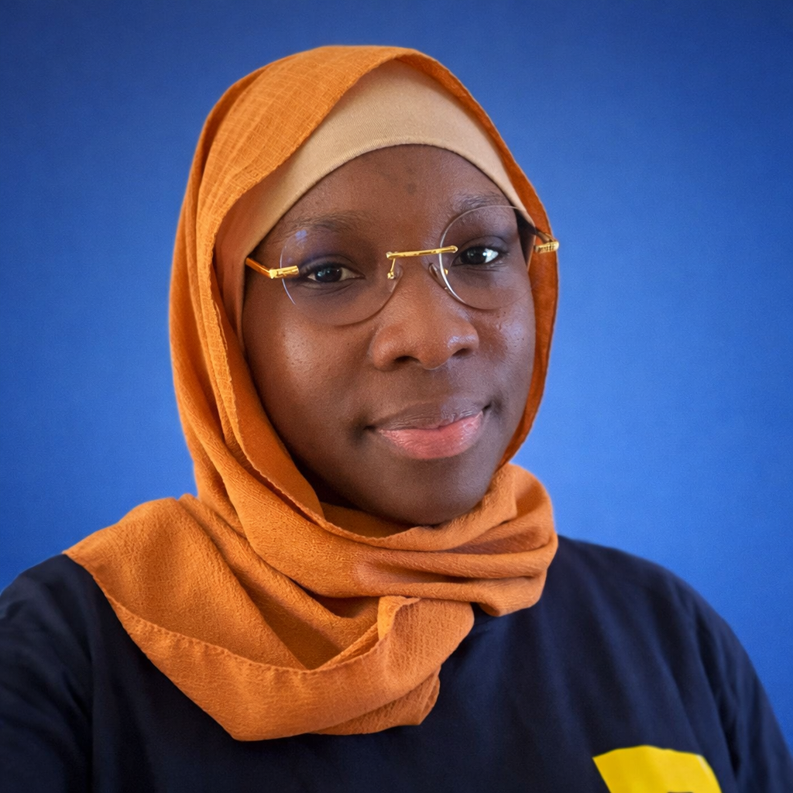

Ingénieure Logiciel • DevOps • Cloud & Monitoring
Dakar, SénégalIngénieure logiciel avec une forte expertise en développement backend, DevOps et monitoring des systèmes IT. Expérimentée sur des environnements critiques chez SONATEL et ATOS, avec Kubernetes, Java, Spring Boot, Centreon et le Cloud (AWS & GCP).
Monitoring IT & Réseau avec Centreon, automatisation Ansible, scénarios E2E Robot Framework, Selenium Grid sur Kubernetes et dashboards Grafana.
Développement d’APIs REST Java/Spring Boot, tests unitaires, pipelines CI/CD et déploiements Kubernetes via ArgoCD.